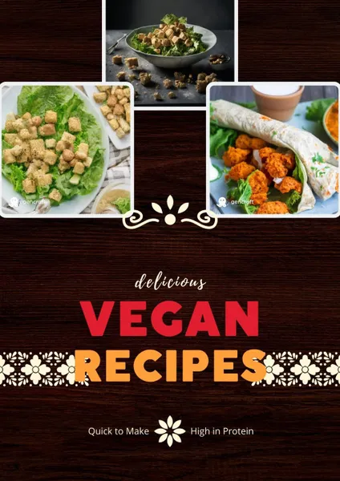
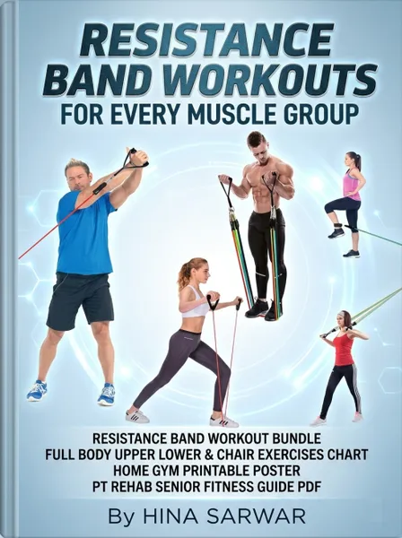

Herbal Remedies for Everyday Ailments
Product profile · Marketplace data 2026-10-14 · Sales-page research 2026-10-14 · Categories: Health & Fitness, Survival
- Herbal Remedies for Everyday Ailments is a e-books in Health & Fitness and Survival sold through the Digistore24 marketplace by vendor Monis007, listed since 2023-08-27.
- List price $13.43 (single payment) — checkout, delivery and refunds are handled by Digistore24 itself, not the vendor.
- Buyer protection: no standardized guarantee wording detected — locate the refund terms on the official page before paying.
Interested in Herbal Remedies for Everyday Ailments? The current price, bonuses and guarantee terms live on the vendor's official page:
Check the official sales page
Affiliate link — we may earn a commission at no extra cost to you.

Marketplace record
| Product type | E-books |
|---|---|
| Price | $13.43 (Single payment) |
| Refund window | Per the vendor's sales page — check the official page before buying |
| Vendor | Monis007 (listed since 2023-08-27) |
Vendor's marketplace description
Get 100 remedies at your hand with this E-Book- Why you should buy this book: Herbal remedies are a safe and effective way to treat common health problems. Herbal remedies are often more affordable and accessible than conventional medicines. This book provides recipes and instructions for creating herbal remedies at home, using simple ingredients that are easy to find. This book is a valuable resource for anyone who wants to learn more about the benefits of herbal remedies and how to use them to improve their own health and well-being. For Affiliates - A product with good niche and low price to increase sale. Also, to make it affordable for public .
From the vendor's sales page
Page title: Herbal Remedies for Everyday Ailments
Opening copy
Herbal remedies are often more affordable and accessible than conventional medicines.
This book provides recipes and instructions for creating herbal remedies at home, using simple ingredients that are easy to find.
This book is a valuable resource for anyone who wants to learn more about the benefits of herbal remedies and how to use them to improve their own health and well-being.
CTA buttons: “Click Here to Get Instant Access” · “Get Instant Access”
Research method: raw HTML fetch · 146 words on page · quality: medium · researched 2026-10-14. Full research file (MD) ↗
Usage — as described by the vendor
This book provides recipes and instructions for creating herbal remedies at home, using simple ingredients that are easy to find.
This book is a valuable resource for anyone who wants to learn more about the benefits of herbal remedies and how to use them to improve their own health and well-being.
More images (from the vendor's sales page)
Images are taken from the vendor's official sales page and belong to the vendor; they show the product as marketed.
Good to know
- No guarantee language found in our research of the sales page — confirm the refund window on the official page before you buy.
What is Herbal Remedies for Everyday Ailments?
Herbal Remedies for Everyday Ailments is a e-books in the Health & Fitness category of the Digistore24 marketplace, published by vendor Monis007 and on sale since 2023-08-27. The vendor describes it as follows: "Get 100 remedies at your hand with this E-Book- Why you should buy this book: Herbal remedies are a safe and effective way to treat common health problems. Herbal remedies are often more affordable and accessible than conventional medicines. This book provides" (vendor's marketplace description, lightly truncated).
Herbal Remedies for Everyday Ailments pricing: what you will pay
The marketplace lists Herbal Remedies for Everyday Ailments at $13.43 (single payment). Digistore24 adds any tax your country requires at checkout, where you see the final amount before paying. There is no separate marketplace-side fee; vendors may offer their own upsells after checkout.
Herbal Remedies for Everyday Ailments refund policy and money-back guarantee
We did not find standardized guarantee wording on the sales page. Refunds for Digistore24 purchases are processed through the platform: request via the support link in your order email, within the vendor's guarantee window shown at checkout. Practical advice: decide inside the window — if the product underdelivers, refund it rather than letting it ride.
Details and mechanics: how Digistore24 refunds work.
Who is Herbal Remedies for Everyday Ailments for?
Based on its Health & Fitness classification and single payment pricing, Herbal Remedies for Everyday Ailments targets buyers looking for health & fitness solutions at an entry-level price. The honest test is not the category but your own situation: will you realistically use it within the refund window? If yes, the price is an investment; if not, it is clutter — regardless of quality.
Is Herbal Remedies for Everyday Ailments legit? What to verify before buying
We do not rate legitimacy — nobody can, without using the product. What you can verify, all on this page: the vendor's marketplace history (listed since 2023-08-27), the verbatim sales-page extracts below (labeled vendor claims — their marketing, not our endorsement), the guarantee terms at checkout, and the delivery method. Red flags to check on any offer: pressure countdowns paired with vague refund terms, testimonials without dates, and vendor sites that hide pricing until checkout.
How do you access Herbal Remedies for Everyday Ailments after buying?
Checkout runs on Digistore24. After payment: E-books on Digistore24 are delivered as a digital download (usually PDF/EPUB): right after checkout you get a download link or member-area access, and can read on any device. Keep your order email — it is your key to the e-books, your refund requests and Digistore24 buyer support.
Herbal Remedies for Everyday Ailments reviews: how to research it properly
Third-party "reviews" of marketplace products are mostly affiliate content — including pages like this one, which earns a commission on purchases. Treat every review (ours included) as a starting point, then verify against primary sources: the vendor's own sales page, the Digistore24 refund policy, and — for health & fitness — independent communities outside the affiliate ecosystem. On this page the sales-page extracts below are quoted verbatim, so you can judge the vendor's claims without clicking away.
How to buy Herbal Remedies for Everyday Ailments safely
- Open the official sales page and read the full offer.
- Confirm the final price and the refund window on the Digistore24 checkout page — that page is binding, not any review.
- Pay inside the Digistore24 checkout (never by bank transfer or off-platform links).
- Save the order confirmation email; note the refund deadline in your calendar.
- Evaluate promptly. Digistore24 buyer support can help if the vendor is unresponsive.
Full research archive for this product (Markdown: complete marketplace record + verbatim sales-page extracts): Herbal Remedies for Everyday Ailments — data archive (.md).
- Listed price & billing — source: official Digistore24 marketplace API, snapshot 2026-10-14. The checkout page is always the binding source for the current price.
- Sales-page quotes & headline — source: https://socialartiste7.systeme.io/herbalremedy, fetched 2026-10-14 (method: raw HTML). Verify: open the official page.
- Guarantee / refund — set by the vendor; confirm on the sales page at purchase time.
- Not verified by us: product quality, outcomes, testimonials — no hands-on test has been performed for this listing.
Frequently asked questions about Herbal Remedies for Everyday Ailments
Answers compiled from the marketplace snapshot (2026-10-14) and vendor sales-page research (2026-10-14); vendor claims are labeled inline.
What is Herbal Remedies for Everyday Ailments?
Herbal Remedies for Everyday Ailments is a e-books sold through the Digistore24 marketplace by vendor Monis007, listed since 2023-08-27. It is filed under Health & Fitness and Survival. Digistore24 handles checkout, delivery and refunds for this product.
How much does Herbal Remedies for Everyday Ailments cost?
The Digistore24 marketplace lists it at $13.43 (single payment). Prices are set by the vendor and can change — the marketplace record above shows the snapshot; the official sales page shows the current price.
Is there a money-back guarantee for Herbal Remedies for Everyday Ailments?
Our sales-page research did not find explicit guarantee language. Many Digistore24 products carry a 60-day money-back guarantee, but this is set per product by the vendor — confirm on the official sales page before buying.
Is Herbal Remedies for Everyday Ailments legit?
We don't rate legitimacy — we publish verifiable data instead: vendor Monis007 (listed on Digistore24 since 2023-08-27), listed on the marketplace since 2023-08-27, with its complete sales-page research archived on this page (vendor claims labeled as such). Read our 6-point evaluation method and judge with the facts — or join the discussion about Herbal Remedies for Everyday Ailments.
Where can I buy Herbal Remedies for Everyday Ailments safely?
Only through the official sales page linked on this site (checkout and refunds run via Digistore24). Verify the price and guarantee there before ordering. That link is an affiliate link — buying through it supports this site at no extra cost to you.
How do I get Herbal Remedies for Everyday Ailments after paying?
Checkout runs on Digistore24: after payment you receive your access or download by email and in your Digistore24 customer account. Delivery details for this product type: E-books on Digistore24 are delivered as a digital download (usually PDF/EPUB): right after checkout you get a download link or member-area access, and can read on any device. If anything fails, Digistore24 buyer support can recover your order.
All 50 buyer questions about Health & Fitness — the full category FAQ.
Discuss Herbal Remedies for Everyday Ailments on Reddit
Community threads are where real buyers compare notes. We link to communities, not to specific posts — threads move, subreddits stay:
- r/Supplements — community discussions that often touch health & fitness.
- r/nutrition — community discussions that often touch health & fitness.
- Search Reddit for "Herbal Remedies for Everyday Ailments" — real-time results, we don't control them.
- Top "review" mentions this year — sort by top, filter by recency yourself.
Related shopping on Amazon
Physical products and gear commonly bought alongside Herbal Remedies for Everyday Ailments:
- Shop supplements on Amazon — top results, Amazon's ranking.
- Bestsellers in supplements — live Amazon list, we don't curate it.
Sponsored: as an Amazon Associate, DigistorePicks earns from qualifying purchases (tag adminstore05-20). Amazon sets its own prices and commissions (typically low single digits — far below Digistore24 vendors' 30–75%). We list Amazon as a convenience for physical goods; it is not an alternative to the digital product above.
Related offers in Health & Fitness

The Zōē Method is a premium 12-week personalized coaching program built around female cycle . Your audience gets personal ondoarding, real coach with 18+ years

Learn Vegan Living with Practical Video Courses Vegan Warrior PRO is a collection of practical videos, tutorials, and courses created for people interested in v

Quantum Heart is a physical, shippable aluminum pendant with three body-facing 650nm visible red-light LEDs and USB-C recharging. Customers can choose one penda

Advanced Features of Teslacare Terahertz Technology Teslacare Terahertz Devices use advanced technology to provide detailed targeting of the human body, which c
Other offers by Monis007

Vegan Recipes that are with Unique Niche of high Protein and Quick to Make. The Combination that is in super demand and not available in market. Tired of commen
Herbal Remedies for Everyday Ailments is also listed in
Survival (40 products)
Similar price range in Health & Fitness

Updated for 2025! 200+ Delicious Vegan Recipes + 30-Day Meal Plan & Bonuses! LIMITED-TIME 80% COMMISSION! Earn $60+ per sale with high-converting upsells! L

Earn 70% Commissions on a High-Converting Fitness & Home Workout Offer! Product Title: Resistance Band Workouts For Every Muscle Group Niche: Fitness &

Earn 70% Commissions on a High-Converting Health & Fitness Affiliate Offer Product Title: Full Body Stretching Exercises – Mobility & Daily Flexibility

Product: Sleep Architecture — The No-Pill Guide to Perfect Sleep Format: Digital sleep improvement guide Focus: Better sleep habits, nighttime routines, and nat
Related searches
Where to check it out
Read the vendor's full sales page (current price, guarantee terms and bonuses are listed there):
View official sales page
That link is an affiliate link — if you buy through it we earn a commission from the vendor at no extra cost to you.
Sources & further information
- Official sales page (current price, guarantee, bonuses): socialartiste7.systeme.io/herbalremedy (affiliate link)
- Public Digistore24 product page: checkout-ds24.com/product/513927
- Full research file (Markdown, versioned): content/products/45146-herbal-remedies-for-everyday-ailments.md
- Vendor's affiliate support page: socialartiste7.systeme.io/affiliate
- Marketplace category: Health & Fitness
How we evaluate products like Herbal Remedies for Everyday Ailments
Six checks, all on official marketplace numbers — earnings/sale ÷ cancel-rate skepticism × funnel fit. Read the full evaluation method · our research standards & labeling.
Questions, or own experience with Herbal Remedies for Everyday Ailments?
We publish hands-on reviews only after buying a product ourselves — but your experience helps other readers: start or join the discussion about Herbal Remedies for Everyday Ailments on GitHub. Found a wrong number? Report a correction — every page shows its data dates, and corrections are applied to the whole site.